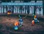
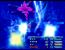
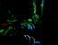

|
At various locations on the World Map, a random battle occurs but
the music sounds sweet and melodic. The creatures that appear won't
attack either; instead, they beg you to give them a specific jewel.
If you give them the jewel, your party receives a ton of AP and
sometimes a useful item.
What
is the secret of these strange monsters? Well, if you encounter
all eight of them, you get to interact with the Friendly Yan on
Vile Island. When you give this cute little creature what it desires,
you get to attack Ozma physically. This is the most difficult hidden
monster to overcome in the game, and the characters won't be able
to use physical attacks without feeding all of the friendly creatures.
Being able to attack Ozma physically enables characters such as
Zidane, Steiner, and Amarant to be more useful in the fight.
| You
may notice that some friendly monsters make reference to other
friendly monsters, and even give you the appropriate stone to
feed to them. This reinforces the fact that there is a certain
order in which to encounter the friendly creatures, and the
table at the end of this section indicates the order. |
 |
|  |
The
only catch is that you can only find some of the monsters in
dangerous, out-of-the-way places. For example, you can only
find the Purple Jabberwock in a forest on the west continent,
which requires the Invincible airship or the red chocobo to
reach. The Friendly Yan's more aggressive counterparts on Vile
Island are, in fact, some of the toughest creatures in the game,
and may wipe out your party during the effort. |
 TIP TIP
KEYWORD: FRND4 |
|
THE
ALMIGHTY YANS
|
|
If
you get attacked by Yans while searching Vile island for the
friendly Yan, summon Odin and cast Death on them every round.
Also, try to perform the ReflectX2 trick with Vivi, and have
everyone else perform their most powerful skill.
If
Quina can successfully eat one of these enemies, s/he
can learn the Auto-Life ability. Yans have around 20,000
HP, making them tough to dispose of quickly. However,
each set of three is worth 28,000 EXP and 3 AP, which
makes leveling up and learning abilities much easier!
|
 |
|
Friendly
Creatures
|
Name
|
Location
|
Wants
|
Reward
|
|
Brown
Mu
|
Plains
between the Ice Cavern and Dali
|
1
Ore
|
10
AP, Potion
|
|
White
Ghost
|
Plains
around Treno
|
1
Ore
|
10
AP, Hi-Potion
|
|
Color
Ladybug
|
Forest
around Black Mage Village
|
2
Ores
|
20
AP, Ether
|
|
Green
Yeti
|
Bigger
forest outside Madain Sari
|
2
Ores
|
20
AP, Elixir
|
|
Green
Nymph
|
Forest
near Iifa Tree
|
3
Ores
|
30
AP, Emerald
|
|
Purple
Jabberwock
|
Forest
directly east of Oeilvert
|
Emerald
|
40
AP, Moonstone
|
|
Green
Feather Circle
|
Lost
Continent
|
Moonstone
|
30
AP, Lapis Lazuli
|
|
Rainbow
Garuda
|
East
forest on plateau above Gizamaluke's Grotto
|
Lapis
Lazuli
|
40
AP, Diamond
|
|
Friendly
Yan
|
Forest
on Vile Island
|
Diamond
|
50
AP, Rosetta Ring
|
|
){kind=link}
){kind=link}
){kind=link}